Lessons in Theosophy
Lesson 17, The Flow of Consciousness —
The Entire Involution-Evolution Cycle
The Universe follows a cycle of manifesting and unmanifesting.
“Everything in the Universe progresses steadily in the Great Cycle, while incessantly
going up and down in the smaller cycles. Nature is never stationary during manvantara, as
it is ever becoming, not simply being ....”
(H.P. Blavatsky, The Secret Doctrine, vol. I p. 257
online or
hardcopy)
“The goal of the spirit is not a mere return to its source.
unaltered by all that it manifests. It seeks a rich harvest of
experience....”
(Man, the Measure of All Things, by Prem & Ashish p. 296)
“...before this Earth came into being there was a previous sphere, which in turn was the reimbodiment of a
preceeding globe, and before that one an antecedent sphere, and on and on, stretching immeasurably below
the staus of this evolutionary development. Lifewise, we may envision an increasing evolutionary
advancement for the world, stretching higher and higher, infinitely beyond the scope of our imagination
as to attainable heights of evolution. Is this not a grander concept than the single span of
one planetary existence, with but one short earth-life for man on this globe?”
(The Divine Plan, by Geoffrey Barborka, pp. 7-8)
“...the course of evolution is the sweeping outwards from
the center to the circumference and then the returning inwards from the circumference towards the
center. As the Great Breath goes outwards and matter comes into existence, becoming denser and
denser, there will be a point at which matter will be at its densest and energy at its feeblest,
at which form will be at its most rigid and life at its most hidden; so that this outward process
will be a process in which matter will be densifying and form will be increasing in rigidity,
while life will be becoming more and more veiled in its manifestation. On the other hand when
there is the returning of the Breath, the bringing again of this creative activity as it were
to the center, matter will grow more and more subtle, life will become more and more unveiled,
until finally the Great Breath will draw in from this manifested Kosmos all the world’s experiences
that have been gained. The humanity which was the object and outcome
of this evolutionary process will have become divine and ready for yet mightier stages of advance.
And following that great sweep outwards we realize that as we follow it there is as regards the
inhabitants a process towards individualization as they pass into denser matter. So that looking
at the inhabitants of these planes, as they lie behind us, we shall see what is called the elemental
essence gradually taking to itself more and more definite forms; its evolution, being on the descending
arc, lies in its becoming more separated and taking more material forms; it is a process downwards
into matter whereas the evolution now of mankind, being on the ascending arc, lies in its rising
into unity and taking more subtle forms, for it is a process upwards
into the unveiled life.
“...in the planes that are less dense than
the physical, we have not only evolving and ascending humanity but also the involving and
descending elemental essence. In the mineral world is the turning point, for there the densest
stage has been reached. In the upward evolution the mineral and the vegetable kingdoms of this
physical world occupy the physical plane and do not pass to a consciousness beyond it; as
evolution proceeds the animal world takes one step upwards....”
(Annie Besant, The Path Of Discipleship, paragraphs 84-85 online or
pages 115-117 hardcopy).
Even the cosmos is evolving.
“It is not maintained that ... the cosmos is a manifestation of perfection.
The reason that his idea is not held is because the cosmos itself is evolving,
seeking to become a better cosmos, striving to come into a greater degree of
harmony with the Divine Plan.”
(The Divine Plan, by Geoffrey Barborka, p. 2)
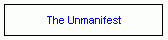 |
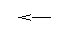 |
The Unmanifest (the “Absolute”) cannot be described. There are no attributes or adjectives that the human mind
can use to comprehend the Unmanifest.
|
|
Manifestation begins. (This is described in detail in Lesson 19.)
|
| |
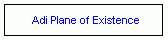
|
|
|
|
The appearance of atoms (Adi-level atoms, not physical-science atoms) on the Adi Plane (page 16) (paragraph 26).
These atoms comprise the matter on the first sub-plane of Adi.
Some of these atoms remain as is, while others combine into “molecules.”
These new (multi-atom) molecules
make up the lower, second level of Adi. Some of these second-level molecules then combine to create
third-level molecules. In this way, seven levels of
density of matter are created, causing seven sub-planes of Adi to appear. (page 17) (paragraph 26).
|
| |
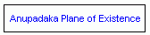
|
|
|
|
The appearance of the first Anupadaka sub-plane (Anupadaka atoms). Atoms from the Adi plane of
existence gather to form shells,
which also have shells in them made of Mulaprakriti. The double-shells become the highest sub-plane matter
of Anupadaka. Then, even more complex molecules appear, creating all seven sub-planes of Anupadaka.
(This process of combing molecules on molecules, and attachng Mulaprakriti shells is then repeated on the
Atmic level, etc.) (page 17) (paragraph 26).
|
| |
|
Monads first appear. Monads are the first individualized "spiritual-centers" of the divine, the "one becoming the many."
They are "fragments of the Logos' life", separated off as an
individual entity (page 11) (paragraph 16).
The Logos' "Flame" causes "sparks" to appear in Anupadaka. These sparks, called Monads,
contain the "will to exist," motivating them to move onto further levels of manifestation (page 38) (paragraph 54).
|
| |
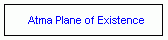
|
|
|
|
The Monad manifests an aspect of itself on the Atmic plane (page 42) (paragraph 58).
|
| |
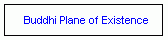
|
|
|
|
The Monad manifests an aspect of itself on the Buddhic plane (page 42) (paragraph 58).
|
| |
|
|
|
|
The Monad manifests an aspect of itself on the Mental plane (page 42) (paragraph 58).
|
| |
|
The Attaching of a Mental Atom to the Monad. The Monad anchors itself to
a mental atom on the fourth mental sub-plane.
This anchoring is done by Devas (page 66) (paragraph 98).
|
| |
|
The first Elemental
is created. (Elementals are objects that go on to become group-souls.
Groups-souls are objects that ensoul minerals, plants, and animals.)
The mental atom is separated from other groups,
by a delicate film of monadic esence, which is the beginning of the group-soul.
The resulting object is an elemental.
The entire unit is gradually awakened by
mental-level vibrations, produced by the vaguest of internal meovement, leading to consciousness.
Over time, these attached untis acquire the power to vibrate in certain ways, vibrations which
are the precursor to thinking, and will later make thought possible (pages 67-69) (paragraph 98).
|
| |
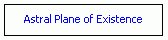
|
|
|
|
The Attaching of an Astral Atom to the Monad.
|
| |
|
The elemental unit acquires a second layer of monadic essence,
formed from monadic essence of the desire (astral)
plane. The elemental now has two sheaths, the beginning of the walls of the group-soul (pages 68-69) (paragraph 99).
| |
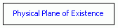
|
|
|
|
The Attaching of an Physical Atom to the Monad.
|
| |
|
The elemental unit acquires a Third layer of monadic essence,
formed from monadic essence of the physical
plane. The elemental now has three sheaths, the walls of the group-soul are now complete (pages 68-69) (paragraph 99).
|
| |
|
Complete Group-souls now exist (having three separate layers which
form an envelope, which contains innumerable triads).
Group-souls float
on the great sea of matter (especially before immineralization), as baloons might float in the sea (page 90) (paragraph 131).
|
| |
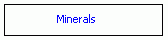
|
|
|
|
The first attaching of a group-soul to a “chunk” of mineral
(The first ensouling of a physical object by a “soul”.) (page 90) (paragraph 131).
|
| |
|
Physical awareness now begins to awaken. For the first time, the life-form turns outward,
recognizing contact with other entities in an external world (page 91) (paragraph 133).
|
| |
|
This is the first realization of “I” and “Not I”, although this consciousness is described as
"sleeping" in the mineral world (page 94) (paragraph 137).
|
| |
|
The mineral experiences of freezing, melting, being crushed, turning to molten metal,
all impact upon the mineral consciousness. As a result, vague answers of sympathetic
vibrations arise, within the deep-slumbering consciousness (page 95) (paragraph 139).
|
| |
|
Chemical valency and the bonding of chemnical compunds are seen as strong desire on the mineral level.
There is a response within the astral part of the group-soul, although it is quite unorganized (page 97) (paragraph 140).
|
| |
|
There is no mental activity within mineral group-souls (page 97) (paragraph 140).
|
| |
|
When the group-soul is ready, it is guided by Devas to the plant kingdom for plant manifestation (page 98) (paragraph 141).
|
| |
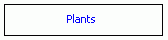
|
|
|
|
At the end of the mineral kingdom phase, the activity of the mineral group-soul is transferred
to the mental plane. Then it nourishes the already-present mental bodies,
and makes them gradually less vague (page 93) (paragraph 135).
|
| |
|
There is a great deal more astral activity for plants than minerals. A tree that lives
a long life, for example, becomes able to experience pleasure and discomfort (page 100) (paragraph 143).
|
| |
|
We see, for the first time, a small accumulation of mental matter around long-living trees,
which manifests as faint memory, followed by faint anticipation (pages 100-101) (paragraph 144).
|
| |
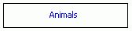
|
|
|
|
When ready, a vegetable goup-soul is guided by Devas to life in the lowest of animal,
for example, bacteria, amoebae, etc (page 101) (paragraphs 145-146).
|
| |
|
It is important to note that bacteria do not suffer from the removal of its group-soul.
The bacteria are a host, not bodies formed specifically for the use of a permanent atom (triad) (page 101) (paragraph 146).
|
| |
|
Each triad eventually becomes possessd of its own individual group-soul envelope, ready for
Individualization. It is now ready for a casual body, and its first human incarnation (page 102) (paragraph 148).
As time goes on, a group-soul gradually contains fewer and fewer triads. When a single group-soul
contains only one triad, and is ready, it becomes a part of a causal body. The upward-drawn group-soul meets
triand meets the downpouring from above (from a causal body). This, then, is the beginning of
a reincarnating human, born into its first independent human incarnation (page 93) (paragraph 135).
|
| |
|
Click here for a graphical representation of the individualization
of an animal into a human.
|
| |
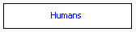
|
|
|
|
The new human “soul” (causal body), freshly individualized from its animal group-soul,
now begins its first human incarnation.
| |
|
~~~
The Monadic essence has descended through all of the Planes of Existence, from the Divine down to the physical,
and has climbed up to the level of human individualization. The Monad had entered the level of the cycle
called humanity, a level all forms of being either have passed through, or will pass through.
“Evolution is an eternal cycle of becoming, we are taught; and nature never leaves an atom unused. Moreover, from the beginning of the Round, all in Nature tends to become Man. All the impulses of the dual, centripetal and centrifugal Force are directed towards one point -- MAN....
Man is the end towards which all animal creation has tended from the first appearance of the first palaeozoic fishes.”
(quoted in The Secret Doctrine, vol II p. 170)
Humanity is the culmination (so far) of a Grand Cycle, a Cycle of spirit's descent and re-ascent through matter.
“...if the Monad begins its cycle of incarnations through the three objective kingdoms on the descending curved line,
it has necessarily to enter on the re-ascending curved line of the sphere as a man also. On the descending arc it
is the spiritual which is gradually transformed into the material. On the middle line of the base, Spirit and
Matter are equilibrized in Man. On the ascending arc, Spirit is slowly re-asserting itself at the expense of
the physical, or matter, so that, at the close of the seventh Race of the Seventh Round, the Monad will find itself as
free from matter and all its qualities as it was in the beginning; having gained in addition the experience and
wisdom, the fruition of all its personal lives, without their evil and temptations.
(The Secret Doctrine, vol II pp. 180-181)
Humanity will now cycle between Earth (the seventh Plane) and
Devachan (the fourth Plane) until it is ready to move on to Nirvana.
“... the human monad identifying
itself with the (mental) forms and caught by the outgoing
tide of Desire-energy, plunges deeper and deeper into the
sea of 'matter' or outward manifestation until it identifies itself
with a physical form or body. There its form is overcome by
stronger forms ... and it retreats once more to gain new
energy by contact with its source. Its subsequent history will
thus be a cyclic one, circling upwards and downwards between
the fourth and the seventh levels. This is the cycle known to
us as that of life and death; death being a withdrawal to the
higher levels, to be followed by a new descent and physical
birth.” (Prem & Ashish, Man, the
Measure of All Things, p. 338)
“We are ... cycling back and cycling forward; i.e., having lost in spirituality
that which we acquired in physical development until almost the
end of the Fourth Race,
we (mankind) are as gradually and imperceptibly losing now in the physical all that we
regain once more in the spiritual re-evolution. This process must go on until the period
which will bring the Sixth Root-Race on a parallel line with the spirituality of the Second,
long extinct mankind.” (H.P.Blavatsky, The Secret Doctrine, vol I p. 537
The human eventually achieves Nirvana and moves on to
levels of existence beyond human. Click here for a chart of levels
beyond the human level of existence.
For further reading on Involution and Evolution:
 |
|
|
|
|
 |
 |
 |
|
|
|
|
copyright © Nick Mojzesz,
2005, 2006, & 2007
all rights reserved. |
| |
| |
|